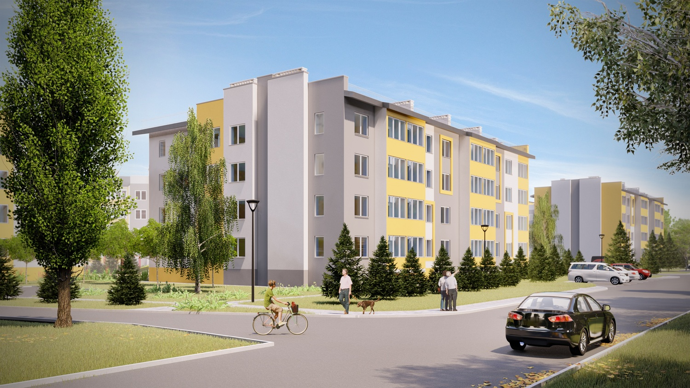
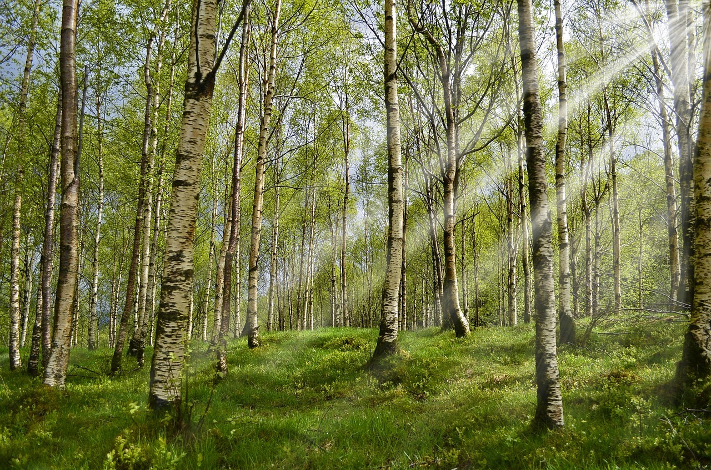
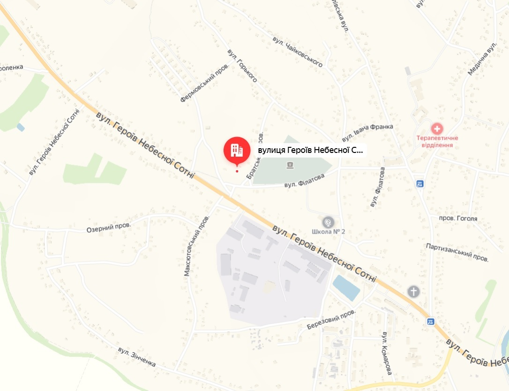

Ранок без поспіху
Простір, у якому є час на себе, сніданок разом і плани на новий день.
БЕРЕЗАНЬ · ЖК ЗАРІЧЧЯ
Місце для ранкової кави, сімейних вечорів
і життя, яке хочеться наповнювати своїм.

Архітектурна візуалізація01 / ПРО БУДИНОК
Перша власна квартира. Простір для двох. Дім для сім’ї. У «Заріччі» кожна історія починається з вашого вибору.
Житловий будинок у Березані, на вулиці Героїв Небесної Сотні, 68. Знайомтеся з плануваннями та уявляйте, яким буде ваш дім.
Побачити будинок ↗02 / ОБРАТИ КВАРТИРУ
Почніть із планування.
Деталі обговоримо на перегляді.
Демонстраційна добірка · Площі взято зі схеми поверху. Відповідність ілюстрацій, ціни та наявність уточнюються.

Атмосферна ілюстрація03 / ЖИТТЯ У ВЛАСНОМУ РИТМІ
Концепція переваг · демонстраційне наповнення
Простір, у якому є час на себе, сніданок разом і плани на новий день.
Уявіть затишний куточок для читання, робочий стіл біля вікна та вечори з близькими.
Власна палітра, улюблені матеріали та деталі, що перетворюють квартиру на дім.
04 / ПОЗНАЙОМТЕСЯ БЛИЖЧЕ
Архівні фотографії не визначають поточний стан готовності будинку.
05 / РОЗТАШУВАННЯ
Київська область, м. Березань
вул. Героїв Небесної Сотні, 68

06 / ДОКУМЕНТИ
Надані сторінки документів.
Повні комплекти та актуальність уточнюються.
ЗРОБІМО ПЕРШИЙ КРОК
Оберіть планування, яке вам до душі,
і залиште побажання до перегляду.
Контакти відділу продажу незабаром